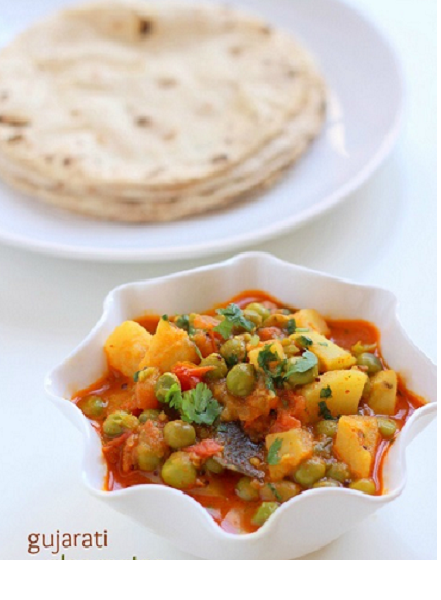

|
|
▢½ ટીસ્પૂન હળદર પાવડર
▢1 ચમચી લાલ મરચું પાવડર
▢1 ચમચી ધાણા પાવડર
▢½ ચમચી સૂકી કેરી પાવડર
▢1 ટીસ્પૂન જીરું પાવડર
▢¼ કપ પાણી
ટમેટા ગ્રેવી માટે
▢2 મધ્યમ કદના ટામેટા
▢ 1 ઇંચ આદુ
▢ 2 લીલા મરચા
Read more
વટાણા બટાટા સબઝી માટે▢150 ગ્રામ અથવા 1 કપ લીલા વટાણા
▢300 ગ્રામ અથવા 4 મધ્યમ કદના બટાકા
▢4 ચમચી તેલ
▢½ ટીસ્પૂન સરસવના દાણા
▢2 સૂકું લાલ મરચું
▢1 ખાડી પર્ણ
▢1 ઇંચ તજ
▢1 ચમચી શેકેલા ચણાનો લોટ
▢મસાલા પેસ્ટ
▢ટામેટાની પ્યુરી
▢સ્વાદ મુજબ મીઠું
▢1 કપ ગરમ પાણી
▢1 ચમચી ગોળ - વૈકલ્પિક
▢½ ટીસ્પૂન ગરમ મસાલો
▢1 ચમચી કસુરી મેથી
▢ બટાકા તળવા માટે તેલ
તડકા માટે
▢ 1 ચમચી ઘી
▢½ ટીસ્પૂન હિંગ
|
|
- એક પેનમાં 2 કપ પાણી ઉમેરો અને તેને ઉકાળો. લીલા વટાણા, મીઠું અને ¼ ચમચી ખાંડ ઉમેરો. લીલા વટાણા નરમ ન થાય ત્યાં સુધી ધીમી આંચ પર 5 મિનિટ સુધી ઉકાળો.
- બાફેલા લીલા વટાણામાંથી પાણી ગાળીને બાજુ પર રાખો.
- એક બાઉલમાં હળદર પાવડર, લાલ મરચું પાવડર, ધાણા પાવડર, સૂકી કેરી પાવડર અને જીરું પાવડર ઉમેરો. થોડું પાણી ઉમેરો અને સારી રીતે મિક્સ કરો. મસાલા પેસ્ટ તૈયાર છે. તેને બાજુ પર રાખો.
- હવે એક મિશ્રણના બરણીમાં ટામેટાં, આદુ અને લીલા મરચાં ઉમેરો. તેને સ્મૂધ પેસ્ટમાં પીસી લો. તેને બાજુ પર રાખો.
- એક પેનમાં થોડું તેલ અને બટાકાના ટુકડા નાખો. બટાકાના ટુકડાને તળીને બાજુ પર રાખો.
- હવે એ જ પેનમાં 4 ચમચી તેલ લો, અને તેમાં જીરું, સરસવ, સૂકું લાલ મરચું, તમાલપત્ર અને તજની સ્ટીક ઉમેરો. તેને સાંતળો.
- હવે આંચ નીચી કરો, તેમાં ચણાનો લોટ (બેસન) ઉમેરો અને તેનો રંગ થોડો બદલાય ત્યાં સુધી શેકો.
- તેલમાં મસાલાની પેસ્ટ ઉમેરીને તેની બાજુઓથી તેલ અલગ ન થાય ત્યાં સુધી સાંતળો.
- પછી ટામેટાની પ્યુરી અને મીઠું ઉમેરો. ગ્રેવીની બાજુઓમાંથી તેલ અલગ ન થાય ત્યાં સુધી ઢાંકીને રાંધો.
- હવે તેમાં તળેલા બટેટા અને બાફેલા લીલા વટાણા ઉમેરો. સારી રીતે ભેળવી દો.
- પછી તેમાં 1 કપ ગરમ ઉમેરો અને બરાબર મિક્ષ કરો.
- તેને ઢાંકીને મધ્યમ તાપ પર 5-7 મિનિટ સુધી પકાવો.
- ગોળ, કસુરી મેથી અને ગરમ મસાલો ઉમેરો. સારી રીતે ભેળવી દો.
- હવે એક તડકામાં ઘી નાખીને ગરમ કરો. ગેસ બંધ કરો અને હિંગ ઉમેરો. સારી રીતે મિક્સ કરો અને તડકાને સબઝીમાં ઉમેરો. સારી રીતે ભેળવી દો.
- આગ બંધ કરો અને સમારેલી કોથમીરથી ગાર્નિશ કરો.
- ભાત અથવા રોટલી અને બાફેલા ભાત સાથે સર્વ કરો.